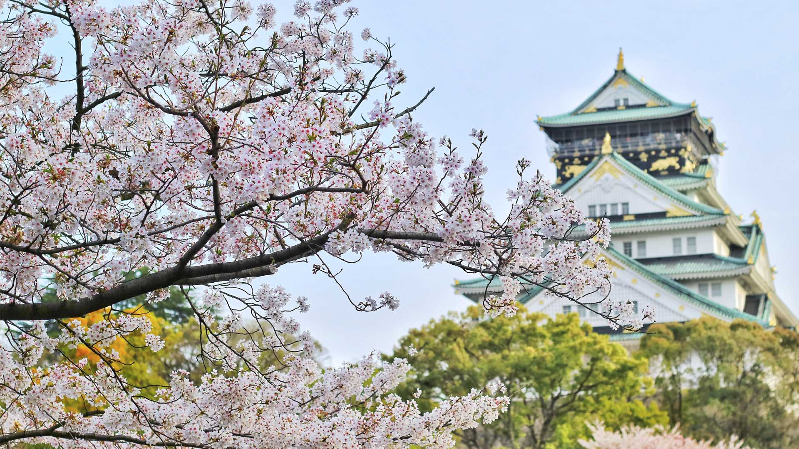

Where do you want to go?
Spring is a wonderful season, with the flowers blooming and the trees and plants growing back again
after the winter break. We can among others recommend a trip to Japan, especially in spring.
Or maybe you want to select another season?
Spring vacation: Kyoto, Japan

Do you think the spring in Japan is beautiful? We do! The flowers of the cherry tree blooms to its
fullest in the wonderful Japanese environments, and together with the temples it really shines. The
city of Kyoto, west of Tokyo, has over 1600 temples for you to visit, so it's up to you to get started!
We can help you along the way too. Inside Kyoto is a travel
guide website, check out their section for the
best temples of Kyoto. You can also take a look at
Trip
Advisor's page for Kyoto.